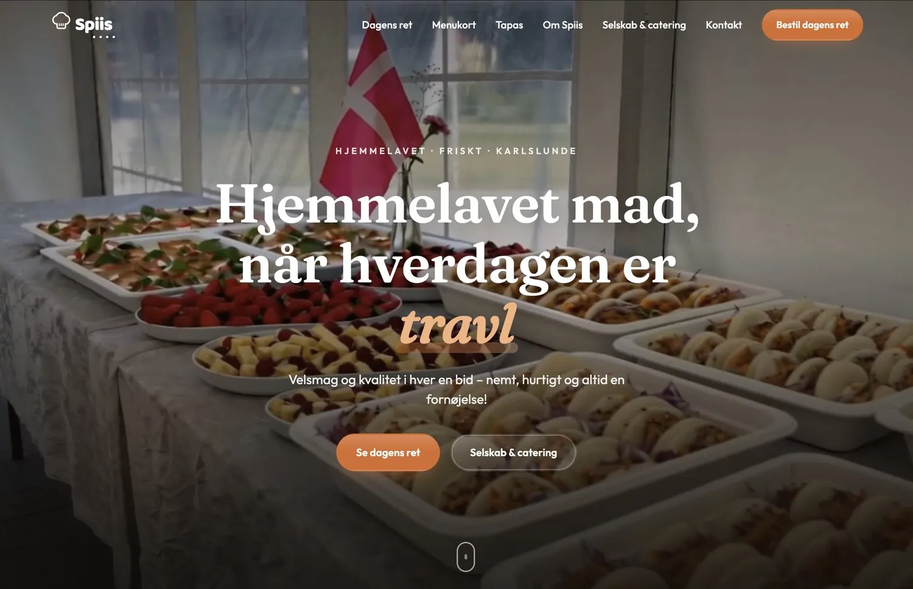
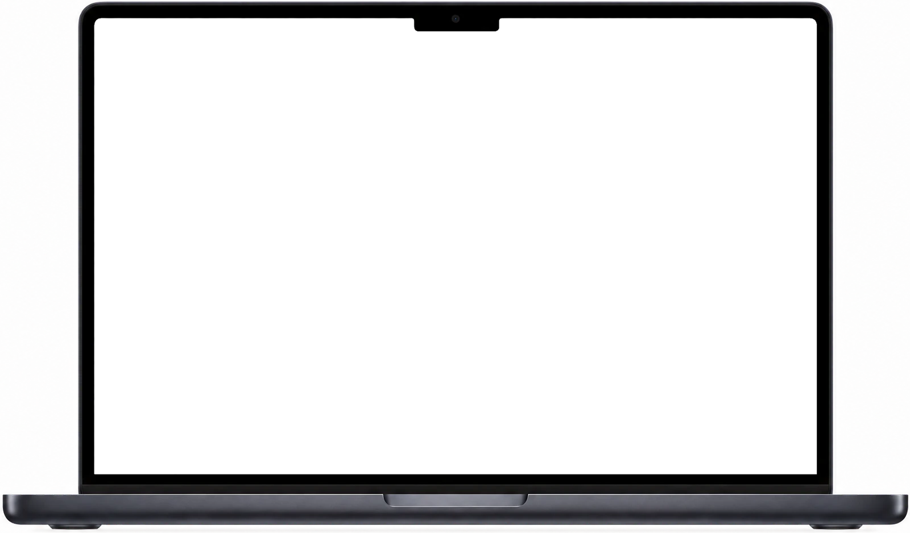

Apps
Apps, folk faktisk har på telefonen.
Notifikationer, Dynamic Island og live-status — sådan som folk forventer det i dag.
Lesreg · Softwarehus
Apps, systemer og integrationer — tegnet, bygget og drevet af ét hus. Hurtigere, billigere og bygget til i dag.
Spiis
Et bestillingssystem uden mellemmand, software der styrer køkken og drift, og en forside, der sælger. Bygget som ét system.
Mosede Havnecafé
Hjemmeside, menukort og skærmene over disken kører på samme indhold. Én ændring, og det hele følger med.
Callster
En AI-medarbejder, der tager telefonen, booker og aflyser — styret med en sms. Vi var med til at bygge den.
Hurtigere, billigere og bygget til i dag.
Hvad vi bygger
Apps
Notifikationer, Dynamic Island og live-status — sådan som folk forventer det i dag.
Systemer
Bestillingen går fra spiis.dk direkte ind i køkkenet, og gæsten får besked. Uden kommission.
Integrationer
Shopify, Flatpay, e-conomic, Dinero, Planway og OnlinePOS — så data kun skal tastes én gang.
Hjemmesider & motion
Filmiske sider og motion design — som den, du er på nu.
Hvad vi laver
Hvad end den er, kan vi bygge den.
På telefonen, hvor kunderne er. Tegnet til i dag.
Bestillinger, køkken og drift, samlet ét sted.
Kassen, regnskabet og betalingen taler sammen.
Hurtigt, sikkert og jeres eget.
Hurtige sider, bygget til at ligge højt, når kunderne søger.
Folk spørger ChatGPT, Gemini og Grok nu. Vi bygger jeres side, så de kan læse den, forstå jer og nævne jer.
Apps · Systemer · Integrationer · Hjemmesider
Til en fast pris, aftalt før vi går i gang.
Nutidens softwarehus
Arbejde
Spiis og Mosede Havnecafé kører på systemer, vi har tegnet, bygget og passer. Callster var vi med til at bygge.
Restaurant · Bestilling & booking
Gæsterne forudbestiller og booker bord på restaurantens egen side. Køkkenet får ét overblik — i stedet for opkald midt i madlavningen.



Café · Menukort & skærme
Hjemmeside, menukort og skærmene over disken kører på samme system. En pris rettes ét sted og skifter alle steder.

AI-medarbejder · vi var med til at bygge
Callster besvarer opkaldene, booker tider og hjælper med det administrative — og ejeren styrer det hele med en besked.
Tekstbesked · SMS
I dag 07.02
Jeg er syg. Aflys alle i morgen og skriv til dem, at de kan ringe til mig på 12345678
Leveret
God bedring 🙏 Dine 5 kunder i morgen er aflyst og har fået en sms med dit nummer. Der står ikke hvorfor.
Proces
I fortæller, hvad der driller. Vi foreslår, hvad der skal bygges.
I får en plan og én fast pris, før vi starter.
Vi tegner det og bygger det — I taler med dem, der laver det.
Samme hænder holder det kørende. En rettelse tager timer, ikke uger.